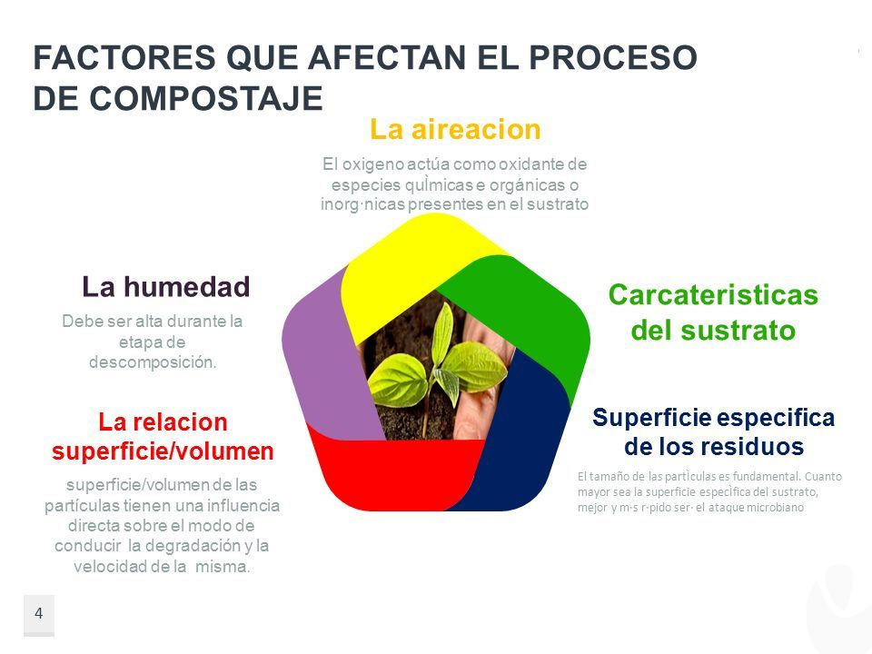

Compostaje
Según el manual del compostaje de la Organización de las Naciones Unidas para la Agricultura y la Alimentación (FAO), el compostaje es la mezcla de materia orgánica en descomposición en condiciones aeróbicas que se emplea para mejorar la estructura del suelo y proporcionar nutrientes. Se trata de un proceso controlado que libera calor, se lleva a cabo en presencia de oxígeno (aeróbico) y humedad y degrada la materia orgánica hasta convertirla en un material estable y útil como fertilizante o como sustrato
Tipos de compostaje
Método Bangalore
Se puede utilizar excrementos y desechos de baños, se lo realiza en huecos, zanjas o pozos este es un método anaerobio. Para la preparación de la fosa esta debe tener un metro de profundidad, debe poseer un cierto grado de inclinación el fondo de la fosa para evitar la acumulación de lixiviados. Para el llenado se lo debe realizar de forma alternada, es decir, una capa con contenido alto de nitrógeno, seguido de una capa de carbono o materia orgánica. La primera capa debe ser de desechos vegetales secos con un espesor de 15 a 20 cm., la siguiente capa también debe contener un espesor de 15 o 20 cm de carbono o materia orgánica. Finalmente en la parte superior debe ser recubierta de una capa arcilla o barro a fin de que no se libere el NH3. Siempre hay que humedecer a este sistema. Las medidas para este método son de 1 metro de altura por 1 o 2 metros de largo y ancho. Dependiendo de las condiciones este método puede estar listo de 3 a 4 meses.
Método Indore
Este es uno más de los diferentes tipos de compostaje es de tipo aerobio, se puede utilizar residuos vegetales, estiércoles de animales, orina, suelo o ceniza de madera, agua y restos de alimentos. Para el llenado de la fosa o la apilación sobre la superficie, el material verde debe estar enriquecido con orina y estiércol. Las capas deben estar distribuidas de 10 a 15 cm de espesor, de igual manera que el método anterior al colocar primero una capa de materia vegetal, seguida de una capa de carbono o materia orgánica. De igual manera en este método se lo debe mantener humedecido y evitar su compactación es por esto que se realiza volteos después de 15 días de llenarse la fosa, 15 días después se realiza otro volteo y después de un mes otro volteo.La dimensión de este método es de 1 metro de ancho por 3 a 10 metros de largo con una altura de 1,5 metros. Dependiendo de las condiciones este método puede estar listo de 3 a 4 meses.
Método Chino
Este es otro método de los tipos de compostaje, para este método se lo realiza en fosas circulares o rectangulares, se puede emplear paja de arroz, estiércol de cerdo, malezas acuáticas o restos vegetales verdes, se puede utilizar también limo de los lechos de ríos. En el llenado de fosas, las fosas se llenan cada capa de 15 cm, en la primera capa se coloca los restos de cultivos verdes o malezas acuáticas como los Jacintos de aguas (lechuguines). En la segunda capa se coloca la paja de arroz, en su tercera capa estiércol de cerdo, finalmente al ser llenado se coloca una capa de lodo y se la humedece con agua. En este método se realizan 3 volteos el primero se lo realiza al primer mes y se añade roca fosfórica y se lo mezcla todo, el segundo volteo se lo realiza al mes siguiente, el tercer volteo se lo realiza dos semanas después del anterior volteo. Cabe mencionar que después de cada volteo se debe añadir una capa de lodo. Dependiendo de las condiciones este método puede estar listo de 3 a 4 meses. Las dimensiones de este método para una fosa circular en su base de 2 metros de diámetro y en su parte final de 3 metros de diámetro. Las dimensiones para una fosa rectangular en este método debe ser de 3 metros de largo por 2,5 de ancho con una altura de 1,5 metros.
Método Bokashi
Se lo realiza en un contenedor, el cual puede contener estiércol o gallinaza, paja o cascarilla de arroz, tierra común, carbón vegetal, cenizas o cal, melaza, salvado de arroz o afrecho y un poco de levadura. Se debe colocar el agua en el recipiente, y añadir la levadura y la melaza, seguidamente se coloca la capa de tierra común mezclada con el carbón. Luego se debe adicionar una capa de estiércol o gallinaza, junto a la cascarilla de arroz y el salvado, además de la cal o cenizas. Durante los primeros cuatro o cinco días de fermentación, revuelven o voltean el preparado dos veces al día en algunos casos, luego lo revuelven solamente una vez al día. Las dimensiones para este método se recomienda que sea de 1,5 metros de altura máximo y de un ancho de hasta 2,5 metros (diámetro).
Compostaje en casa